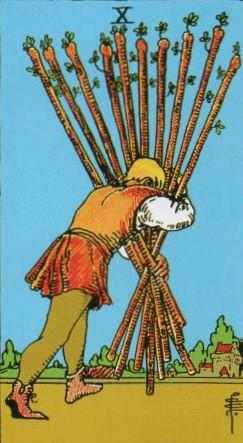
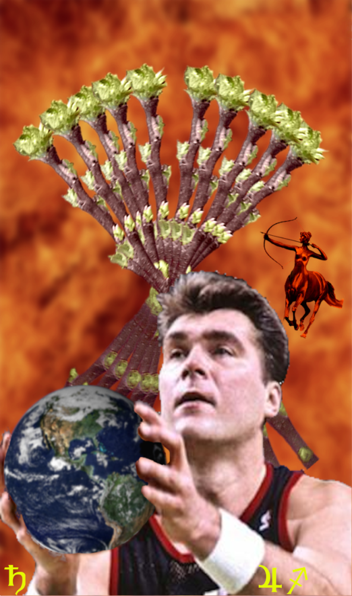
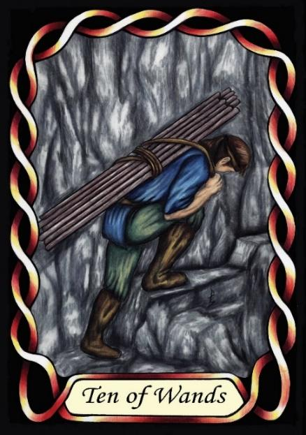

Ten of Wands



Sign |
|
Nine: change |
|
Sign Ruler |
|
Element |
Fire: change |
Modality |
|
Symbol |
Centaur |
Decan |
|
Decan Ruler |
|
Time |
Dec 13 - 21 |
Titan Sagittarius III
A Master of progressive change displays both the expansiveness of Jupiter, and the competitive ambitious nature of Saturn the Titan. These people are typically powerful, of body, mind and will. They are immensely capable people, but their Saturn nature makes them use their abilities for selfish reasons.
Example: Arvydas Sabonis
Goldschneider Personology
They have expansive ideas. They are the most expansive of the Sagittarians, and the grandeur of their beliefs and goals clearly demonstrates the impact of Jupiter. They have a propensity to overwork themselves and put others under stress since they are powerful people. Their positivity is typically noticeable, and they may struggle to deal with negative attitudes.
RWS Imagery
A Titan of a man, a Sagittarius III, carries a heavy load of Wands that would be too much for a lesser man to bear. His legs are drawn strong and solid.
Summary
The Wands represents a Master of progressive change, blending Jupiter's expansiveness with Saturn's ambition and competitiveness. They possess immense capabilities, but may utilize them for selfish purposes.